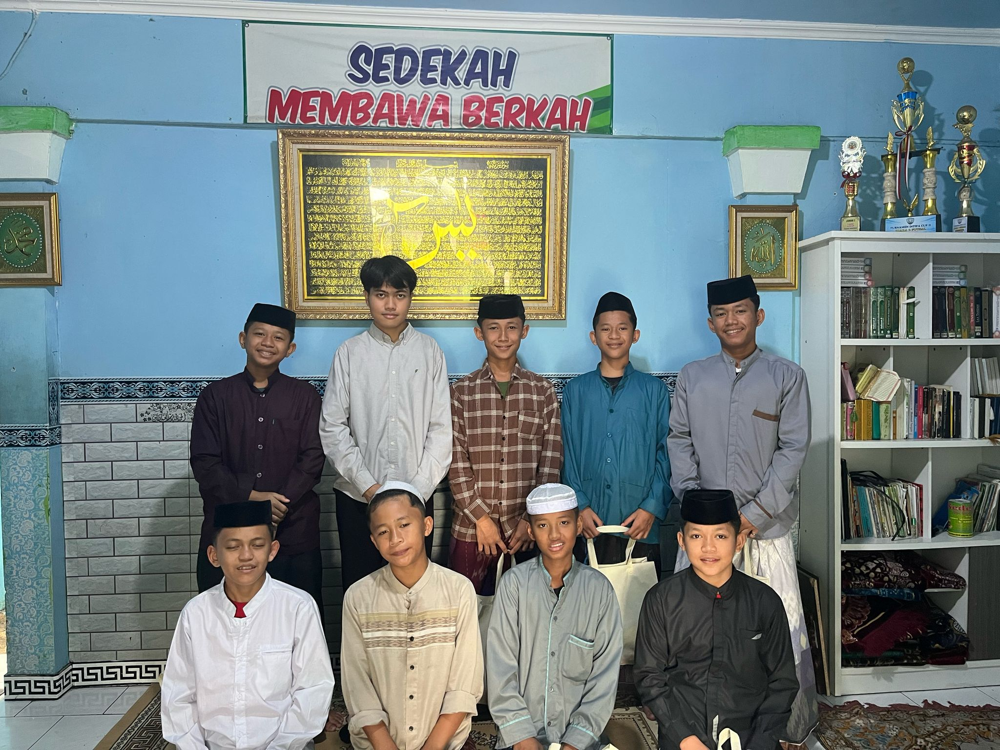
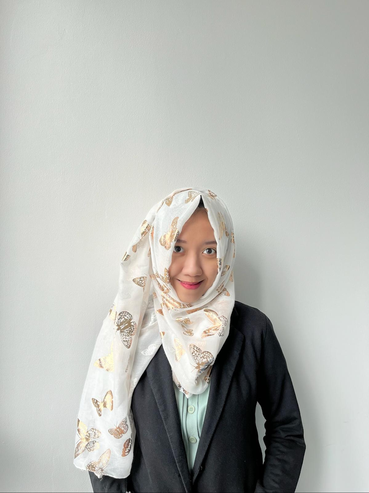

Empowering Communities Through Education
Bergabunglah bersama kami dalam gerakan sosial untuk menyediakan akses pendidikan yang setara bagi pemuda di seluruh pelosok negeri.

1k+
Relawan
7+ Tahun
Pengalaman
Why Join Us?
Mengapa Bergabung Bersama Kami?
Meaningful Impact
Melalui edukasi, kami berdampak langsung pada kehidupan anak-anak yang kurang mampu untuk masa depan yang lebih cerah.
Global Network
Terhubung dengan ribuan relawan dan mentor dari seluruh dunia yang memiliki visi yang sama.
Skills Development
Kembangkan kemampuan kepemimpinan dan manajemen proyek Anda melalui pengalaman langsung.
Community Feedback
What Our Community Says
From Externals
"Kerjasama dengan Hey Youth! memberikan dampak positif yang nyata bagi komunitas kami."
Mr. Rifki Zamzam
Co-Founder, Qatar HR Forum
"Sangat menginspirasi melihat semangat pemuda yang rela berkontribusi untuk pendidikan."
Ms. Rina Nurutami, S.Psi
Vice Principal, Daarut Tauhid
"Hey Youth! adalah jembatan yang menghubungkan antusiasme dengan aksi nyata."
Yiwen Xu
Student, Univ. of Edinburgh
From Internals
"Sangat bahagia bisa bergabung di Hey Youth! Banyak belajar hal baru setiap hari."
Alya
Community Coordinator
"Hey Youth adalah agent of change. Di sini kita bisa membuat dampak nyata."
Herza
Web Developer
"Hey Youth merayakan rasa ingin tahu dan membentuk sistem kepercayaan."
Karyn
Teacher

A Word From Our Founder
"Pendidikan adalah senjata paling ampuh yang bisa Anda gunakan untuk mengubah dunia. Di Hey Youth, kami percaya bahwa setiap anak berhak mendapatkan kesempatan yang sama."
Kami terus bergerak maju, menghubungkan kepedulian dengan aksi, dan membangun ekosistem pendidikan yang inklusif bagi semua.
Yuni Triandini
Founder of Hey Youth
FAQ
Got Questions?
Jawaban untuk pertanyaan yang sering diajukan.
Jangkauan Kami
Global Impact,
Local Roots
Kami menyambut baik kontributor dari 22 provinsi di Indonesia dan 20 negara lainnya. Jejak kami tersebar dari Sabang sampai Merauke, dibangun oleh relawan lokal yang didukung oleh jaringan global.
-
22 Provinsi Tersebar di seluruh Indonesia
-
20 Negara Jaringan kontributor internasional
Ready to be part of movement?
Together, we can create a brighter future for next generation.